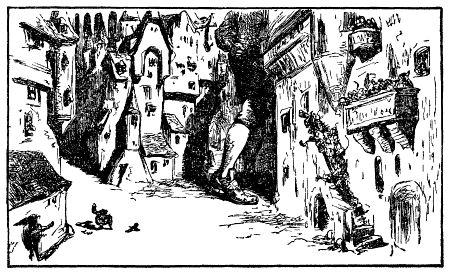
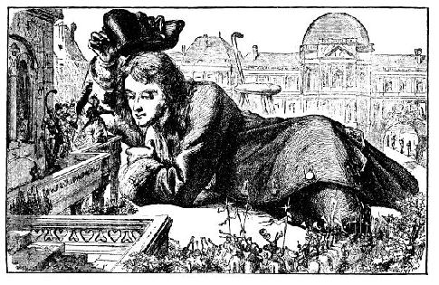

Miêu tả thủ đô Lilliput, thành phố Mildendo, và cung điện nhà vua. - Câu chuyện trao đổi giữa tác giả và tổng trưởng về việc quốc gia - Tác giả đề nghị phụng sự nhà vua trong chiến tranh.

Được tự do, việc đầu tiên của tôi là xin phép đi thăm thành phố Mildendo, thủ đô Lilliput. Vua vui lòng cho phép, nhưng yêu cầu tôi không được làm gì phương hại đến nhân dân và nhà cửa trong thành phố. Người ta công bố cho dân chúng biết tôi sẽ đi thăm thành phố. Bức tường bao quanh thành phố cao hai foot rưỡi, và rộng ít nhất là mười một inch, xe ngựa có thể đi trên bờ thành một cách dễ dàng. Cách mười foot lại có chòi vững chãi. Tôi bước qua cổng lớn phía tây và bước đi rất chậm chạp trên hai phố chính. Tôi mặc áo gi-lê, sợ tà áo khoác làm hỏng mái nhà, ống máng. Tôi thận trọng đặt từng bước chân để tránh giẫm bẹp người nào chưa kịp về nhà mặc dù đã có lệnh nghiêm ngặt cấm mọi người ở ngoài phố, sợ nguy hiểm cho họ. Cửa sổ các căn nhà thấp và trên mái nhà đầy ăm ắp những người tò mò đứng xem. Tôi có cảm tưởng không ở đâu dân cư lại đông đúc như thành phố này. Thành phố là một hình vuông hoàn chỉnh, mỗi cạnh năm trăm foot. Hai phố lớn cắt nhau ở trung tâm thành phố phân chia thành bốn khu phố đều nhau, phố rộng năm foot. Những con đường và phố hẻm khác không rộng quá mười hai hay mười tám inch, nhỏ quá tôi không bước vào được, nhưng tôi có thể nhìn thấy lúc đi qua. Thành phố có thể chứa được năm mươi vạn người, nhà cao từ ba đến năm tầng, cửa hiệu và chợ búa đông đúc.
Cung điện nhà vua ở trung tâm thành phố, tức là ở ngã tư hai phố lớn. Cung điện có bức tường cao hai foot bao vây, và tường cách xa những nhà chung quanh hai mươi foot. Vua cho phép tôi bước qua bức tường, thành thử tôi có thể nhìn cung điện từ tứ phía. Cái sân bên ngoài hình vuông, mỗi cạnh bốn mươi foot, lại có hai sân nhỏ. Lâu đài của vua ở sân trong cùng.

Tôi rất muốn xem lâu đài này song hết sức khó khăn, bởi vì từ sân này qua sân kia là những cái cổng chỉ cao mười tám inch rộng bảy inch. Vả lại những ngôi nhà ở sân ngoài cao ít nhất là năm foot, tôi không thể bước qua mà không gây nên những hư hại không hể lường được mặc dù tường xây bằng đá phiến rất vững vàng, dày tới bốn inch. Một mặt khác, vua rất muốn phô vẻ lộng lẫy của cung điện. Nhưng phải ba ngày sau tôi mới có thể xem được, sau khi tôi lấy con dao nhỏ cắt một hai cây cổ thụ trong vườn hoàng gia ở cách thành phố khoảng năm mươi fathom. Tôi lấy cây làm hai cái ghế đẩu cao chừng ba foot và đủ sức chịu đựng được tôi. Nhân dân thành phố đã được loan báo tôi đến thăm thành phố lần thứ hai. Tôi đến tận cung điện nhà vua, tay cầm hai cái ghế đẩu. Đến sân ngoài, tôi trèo lên mặt ghế đẩu, một tay cầm cái ghế kia đưa qua các mái nhà, rồi nhẹ nhàng đặt xuống quãng trống giữa sân thứ nhất và sân thứ hai, rộng chừng tám foot. Thế là tôi bước được sang phía bên kia lâu đài một cách dễ dàng bằng cách trèo từ ghế này qua ghế khác. Khi đã ở bên trong, tôi dùng cái móc bằng gỗ để kéo ghế lên. Cứ như vậy tôi đến được sân trong cùng. Tôi bèn nằm nghiêng xuống úp mặt vào cửa sổ tầng hai đã mở sẵn cho tôi nhìn vào trong. Quả là những căn phòng lộng lẫy không thể tưởng tượng được. Tôi thấy hoàng hậu và các hoàng tử trong buồng riêng, có đoàn tùy tùng quây quần chung quanh. Nhà vua ban cho tôi một nụ cười tươi tắn và chìa tay qua cửa sổ cho tôi hôn.